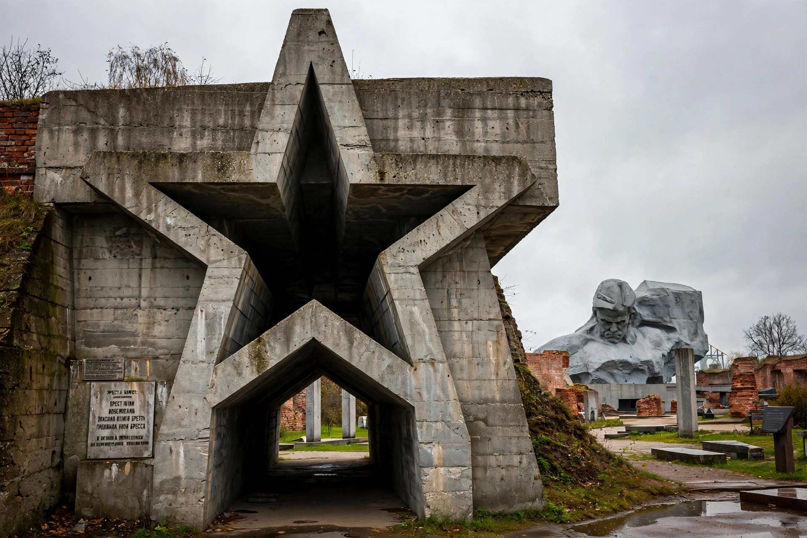

Brest, formerly Brest-Litovsk and Brest-on-the-Bug, is a city in south-western Belarus at the border with Poland opposite Terespol, where the Bug and Mukhavets rivers meet. Population about 340,000. It is the capital of Brest Region.

First mentioned 1019 as Berestye in Kievan Rus'. Contested by Poland, Lithuania, Mongols, and Russia. The 1596 Union of Brest, 1918 Treaty of Brest-Litovsk, and heroic defence of Brest Fortress in June 1941 against Nazi Germany are landmark events.
Brest Fortress Hero Memorial, railway museum, and a major rail gauge-change point between European and Russian gauges. See Belarus, Brest Fortress.